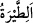
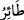
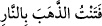

Dil, olacak olanı konuşur; o da oluverir.
Bir hadîste şöyle buyrulmuştur: “Allah hayra yormayı (fe’l) sever, uğursuz saymayı
da kerih görür.”[66]
İbn Melek der ki: “Câhiliyye döneminde bir kimse bir ihtiyacı için yola çıksa ve sol
tarafından bir kuş veya başka bir hayvan gelse, bunu uğursuzluk sayar ve geri dönerdi.
İşte “
(uğursuz saymak)” budur.”
Âyetin mânâsı da ‘uğuruzluğa uğradık’ demektir.
“Sâlih: “Size çöken uğursuzluk” başınıza gelen kötülüğün sebebi, “Allah katında
(yazılı) dır.” O’nun kaderi/takdiridir ya da Allah katında yazılı olan amelinizdir.
Kadere “
” denmesi, inişinin sür’atinden dolayıdır. Allah’ın kesinleşmiş kazâsından
daha hızlı bir şey yoktur. Nitekim Fethu’r-Rahmân’da böyle geçmektedir. Size erişen
hayır ve şer Hak katındandır. Yâni sizin sıkıntı ve meşakkatiniz hükm-i ezelîde Allah
katında yazılmıştır, benim yüzümden değişmez.
Halkın iyilik ve kötülüğü ezelde yazılmıştır
İnsanların söylemesi konuşmasıyla değişmeyecek
“Hayır, siz imtihana çekilen” genişlik ve darlık, yâni hayır ve şer, devlet ve felâket,
kolaylık ve zorluğun birbirini takip etmesiyle sınanıp denenen ve azâba uğratılan “bir
kavimsiniz.” dedi.”
Burada başlarına gelen musîbetin kaynağı olan uğursuzluktan ona sebep olan şeyin
zikrine geçilmiştir.
“
” denir ki ‘Onun saf altın olup olmadığını öğrenmek için onu
sınadım/denedim’ demektir. Allah Teâlâ’nın imtihanı ve denemesi, iyiliği ve kötülüğü
ortaya çıkarmak içindir. Bu imtihanın sonunda peygamberlerin, velîlerin ve sâlihlerin
iyiliği ortaya çıkar. Görmez misin ki Eyyûb (a.s.) imtihan olundu da sabretti. İnsanlar
arasında onun derecesi ve Allah’a yakınlığı belli oldu. Yine bu imtihan sonunda
kâfirlerin, münâfıkların ve fâsıkların kötülüğü ortaya çıkar.
Hikâye edilir ki bir kadın şiddetli ve uzun bir hastalığa yakalandı. Bu yüzden Allah
Teâla hakkında yakışıksız sözler söyledi ve sonunda da küfre düştü. İşte bu yüzden:
“İmtihan edilince kişiye ya ikram edilir ya da aşağılanır.” denilmiştir.
Mihenk taşı ortaya konulsa ne güzel olurdu
Çünkü yalanı olanın yüzü kararacak
İbtilâ/imtihan mutlak olarak, yâni hoşlanılan ve hoşlanılmayan şekilde olsun hakîkatte
Allah Teâlâ’dan bir rahmettir. Çünkü Allah Teâlâ’nın murâdı, kulunu kendisine
çekmektir. Eğer kul Allah’a yönelmezse, geçmiş ümmetlerde ve âhir zamana kadar her
asırda onların ardından gelenlerde görüldüğü gibi dünyada ve âhirette ilâhî gazaba